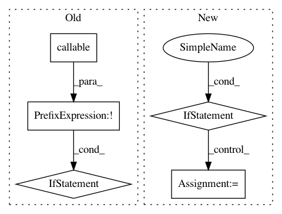

1e15eeebbe3f9647f4a024ce9d44f5f6bb37b179,tsne/tsne.py,TSNE,__init__,#TSNE#Any#Any#Any#Any#Any#Any#Any#Any#Any#Any#Any#Any#Any#Any#Any#Any#Any#Any#Any#Any#Any#,257
Before Change
self.neighbors_method = neighbors
self.negative_gradient_method = negative_gradient_method
if callback is not None and not callable(callback):
raise ValueError("`callback` must be a callable object!")
self.use_callback = callback is not None
self.callback = callback
self.callback_every_iters = callback_every_iters
After Change
self.neighbors_method = neighbors
self.negative_gradient_method = negative_gradient_method
if callbacks is not None:
// If list was passed, make sure all of them are actually callable
if isinstance(callbacks, Iterable):
if any(not callable(c) for c in callbacks):
raise ValueError("`callbacks` must contain callable objects!")
// The gradient descent method deals with lists
elif callable(callbacks):
callbacks = (callbacks,)
else:
raise ValueError("`callbacks` must be a callable object!")
self.use_callbacks = callbacks is not None
self.callbacks = callbacks
self.callbacks_every_iters = callbacks_every_iters
In pattern: SUPERPATTERN
Frequency: 5
Non-data size: 5
Instances
Project Name: pavlin-policar/openTSNE
Commit Name: 1e15eeebbe3f9647f4a024ce9d44f5f6bb37b179
Time: 2018-06-22
Author: pavlin.g.p@gmail.com
File Name: tsne/tsne.py
Class Name: TSNE
Method Name: __init__
Project Name: scikit-learn/scikit-learn
Commit Name: fbb2c7c7007dc373c462e39ab273a183a8823d58
Time: 2019-09-10
Author: thomasjpfan@gmail.com
File Name: sklearn/model_selection/_validation.py
Class Name:
Method Name: _fit_and_score
Project Name: deepmipt/DeepPavlov
Commit Name: 286a864220a00732d382a75051e11877acf13c3f
Time: 2018-01-24
Author: ol.gure@gmail.com
File Name: deeppavlov/models/tokenizers/nltk_tokenizer.py
Class Name: NLTKTokenizer
Method Name: __init__
Project Name: hyperspy/hyperspy
Commit Name: 148a63df4c40c063e1aaf36b09a2057efd38daf9
Time: 2020-07-18
Author: tjof2@cam.ac.uk
File Name: hyperspy/models/model1d.py
Class Name: Model1D
Method Name: _jacobian
Project Name: IndicoDataSolutions/finetune
Commit Name: 2028dffb2a29570c72f10bcb3e35e33fa7fb1c03
Time: 2018-11-13
Author: madison@indico.io
File Name: finetune/base.py
Class Name: BaseModel
Method Name: _inference